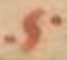
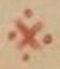
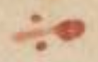
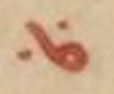
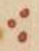
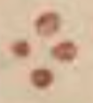

Vat. gr. 1422 - Transcription
transcribed by
FWF Project 32988
Available under the Creative Commons ShareAlike 4.0 International License
2020-07-02
The facsimiles of the manuscript are available: Vat. gr. 1422
The pinakes identifier of the manuscript is: 68053
The content of the manuscript is:
- fols. 1r-24v: Prolegomena
- fols. 25r-242v: Psalmcatena
- fols. 258v-259r: Odescatena
Physical description of the manuscript:
Form: codex
Material: parchment
Extent: 390 x 300 mm
- Fols. 1r-24v are written in two columns. The liniature type of fols 1r-24v is 32D2.
- Fols. 25r-242v are written as bordercatena. Liniature: 18 vertical lines for the bible verses; 64 vertical lines for the catena.
- Fols. 258v-259r contain a textcatena.
Decoration: Contains coloured capitals and decoration.
Written in the 10th or 11th century.
Bibliography
Richard, Marcel, Asterii Sophistae Commentariorum in Psalmos quae supersunt. Accedunt aliquot homiliae anonymae, Osloae 1956, 249-273 (= Symbolae Osloenses Fasc. Supplet. 16).
de Montfaucon, Bernard, Τοῦ ἐν ἁγίοις Πατρὸς ἡμῶν Ἀθανασίου ἀρχιεπ. Ἀλεξανδρείας τὰ εὑρισκόμενα πάντα. Sancti Patris nostri Athanasii archiep. Alexandrini opera omnia quæ extant vel quæ ejus nomine circumferuntur. 1.2, Paris 1698, 1009-1239.
de Montfaucon, Bernard, Collectio nova Patrum et Scriptorum Græcorum, Eusebii Cæsariensis. Athanasii, & Cosmæ Ægyptii. 2, Paris 1706, 63-101. Reprint in: Migne, Jean-Paul, PG 27:60-546, Paris, 1857.
Maurists, N.N., Homiliae super Psalmos., Paris 1857, 209-494 (= PG 29).
Aubert, Jean, Cyrilli Alexandriæ archiepiscopi opera in VI. tomos tributa. 1, Paris 1638. Reprint in: Migne, Jean-Paul, PG 69:717-1273, Paris 1864.
Olivier, Jean-Marie, Diodori Tarsensis Commentarii in Psalmos. 1. Commentarii in Psalmos I–L quorum editionem principem curavit J.-M. Olivier, Turnhout / Leuven 1980 (= Corpus Christianorum, Series Graeca 6).
Mühlenberg, Ekkehard, Psalmenkommentare aus der Katenenüberlieferung. 1, Berlin / New York 1975, 121-375 (= Patristische Texte und Studien 15).
Bandt, Cordula, Eusebius, Periochae, in: Bandt, Cordula, Risch, Franz Xaver, Villani, Barbara, Die Prologtexte zu den Psalmen von Origenes und Eusebius., Berlin / Boston 2019, 128-140 (= Texte und Untersuchungen zur Geschichte der altchristlichen Literatur 183).
Villani, Barbara, Eusebii fragmenta in Psalmos 1-50, forthcoming, 72-441 (= PG 23).
Dorival, Gilles, Fragments of Uncertain Origin from Cod. Vat. gr. 1422. Les chaînes exégétiques grecques sur les Psaumes. Contribution a l’étude d’une forme littéraire. 4, Leuven 1995 (= Spicilegium Sacrum Lovaniense 46).
Antonelli, Niccolò M., Τοῦ ἐν ἁγίοις Πατρὸς ἡμῶν Ἀθανασίου ἀρχιεπισκόπου Ἀλεξανδρίας Ἑρμηνεία τῶν Ψαλμῶν ἢ Περὶ ἐπιγραφῆς Ψαλμῶν· Sancti Patris nostri Athanasii archiepiscopi Alexandriæ Interpretatio Psalmorum sive De titulis Psalmorum, Rome 1746. Reprint in: Migne, Jean-Paul, PG 27:649–1344, Paris, 1857
Jacić, Vatroslav, Supplementum Psalterii Bononiensis. Incerti auctoris explanatio Psalmorum Graeca ad fidem codicum, Vindobonae 1917.
Cordier, Balthasar, Expositio Patrum Græcorum in Psalmos. Codicibus ἀνεκδότοις concinnata; in Paraphrasin, Commentarium & Catenam digesta. Latinitate donata. 3 vols., Antwerp 1643-1646. Reprint in: Migne, Jean-Paul, PG 93:1180–1340, Paris
Delarue, Charles Vincent, Ὠριγένους τὰ εὑρισκόμενα πάντα. Origenis opera omnia quæ græce vel latine tantum exstant et ejus nomine circumferuntur, Ex Variis Editionibus, & Codicibus manu exaratis. 2., Paris 1733. Reprint in: Migne, Jean Paul, PG:12 1053–1685, Paris, 1857
Pitra, Jean-Baptiste, Analecta Sacra Spicilegio Solesmensi parata. 2., 1884 (= Patres antenicaeni, typis Tusculanis).
Pitra, Jean-Baptiste, Analecta Sacra Spicilegio Solesmensi parata. 3., Veneto 1883 (= Patres antenicaeni; e typographeo Veneto).
Schulze, Johann Ludwig, Τοῦ μακαρίου Θεοδωρήτου εἰς τοὺς Ψαλμοὺς Ἑρμηνεία. B. Theodoreti Interpretatio Psalmorum. Ex recensione Iac. Sirmondi graece et latine seorsim edidit, Graeca e codicibus locupletavit, versionem Latinam recognovit, et variantes lectiones adiecit, Halle 1769. Reprint in: Migne, Jean-Paul, PG 80:857–1997, Paris, 1860
 GREEK PUNCTUATION FOUR ANGLE SIGNS
GREEK PUNCTUATION FOUR ANGLE SIGNS
 GREEK PUNCTUATION THREE DOTS
GREEK PUNCTUATION THREE DOTS
 LINKING SIGN ONE
 LINKING SIGN TWO
LINKING SIGN THREE
 LINKING SIGN FOUR
 LINKING SIGN FIVE
 LINKING SIGN SIX
 LINKING SIGN SEVEN
HORIZONTAL LINE
The punctuation has been simplified. Only codepoints 0387 (hex) "GREEK ANO TELEIA", 00B7 (hex) "MIDDLE DOT", 2022 (hex) "BULLET", 205D (hex) "TRICOLON" and 003A (hex) "COLON" are used in the transcription.
"Auszeichnungsmajuskeln" are ignored.
(25r)
(1) ΒίΒΛΟΣ ΨΑΛΜῶΝ
(2) ΨΑΛΜὸΣ ΠΡῶΤΟΣ⁝
[Ps (LXX) 1:1a]
(1) Μακάριος ἀνὴρ. ὃς οὐκ ἐπορεύ (2) θη ἐν βουλῆι (βουλῇ) ἀσεβῶν•(1) [hypopsalmos] |GREEK PUNCTUATION FOUR ANGLE SIGNS| Α´ Β´ ἀλληλούϊα· [perioche] |GREEK PUNCTUATION FOUR ANGLE SIGNS| [Eusebius, Perioche in Ps 1 (Bandt) - quotation]
(1) ὑπο θ(εσις) 〈ὑπόθεσις〉 τοῦ α´ ψαλ (μοῦ)•
[main text]
(1) [Eusebius, Perioche in Ps 1 (Bandt) - paraphrase] [Basilius, hom. in Ps 1 (PG 29 216 B5–7 in Ps 1,1a) - paraphrase] [fons ignotus (ed. Dorival IV 366) - quotation]
(25v)
[Ps (LXX) 1:1b]
(1) |GREEK PUNCTUATION FOUR ANGLE SIGNS| Kαὶ Β ἐν ὁδῶι (ὁδῷ) ἁμαρτωλῶν οὐκ ἔστη·[Ps (LXX) 1:1c]
(2) Καὶ Γ ἐπὶ καθέδραν |LINKING SIGN ONE| λοιμῶν οὐκ ἐ (3) κάθισεν·(1) δαῖος εἴη· εἶτα στάσιν· εἶτα τινὰ ἐδραίαν βεβαίωσιν· παραινεῖ τοίνυν· μήτε τῷ νῷ π α(ρα)δέξασθαι δυσσεβῆ τινὰ ἔν
(2) νοιαν· μήτε ἐπὶ πρᾶξιν ὁδεῦσαι παράνομον· ἀσεβεῖς δὲ φίλον τῇ θείᾳ γραφῇ καλεῖν τοὺς ἀθεΐαν, ἢ πολυθεΐαν θρη
(3) σκεύοντ(ας)· ἁμαρτωλοὺς δὲ τοὺς παρανομίᾳ συζῇν προαιρουμένους· (καὶ) βίον διεφθαρμένον ἀσπαζομένους· λοιμοὺς (δὲ)
(4) τοὺς μὴ μόνον σφὰς αὐτοὺς λυμαινομένους· ἀλλὰ καὶ ἑτέροις τῆς λύμης μεταδιδόντ(ας)· κατὰ τὴν ἐπισκήπτουσαν (καὶ)
(5) ἀνοις (ἀνθρώποις) (καὶ) κτήνεσι νόσον· ἧς μεταλαγχάνουσιν· οἱ τοῖς νοσοῦσι πελάζοντες· διὸ φεύγειν ὁ λόγ ο(ς) παρακελεύεται καὶ τὰ τού
(6) των συνέδρια· ἐπειδὴ δὲ οὐκ ἀπόχρη· εἰς ἀρετῆς τελείωσιν· ἡ τῆς κακίας φυγὴ· ἔκκλινον γάρ φ η(σιν) ἀπὸ κακοῦ (καὶ) ποίη
(7) σον ἀγαθὸν· (καὶ) ὁ μακάρι ο(ς) Ἡσαΐας παύσασθε φ η(σὶν) ἀπὸ τῶν πονηριῶν ὑμῶν· μάθετε καλόν ποιεῖν· μάλα εἰκότως ἐπήγα
(8) γεν ὁ μακάριο(ς) δαδ (Δαυΐδ)· ἄλλ ω(ς) Ἡ μὲν προφητεία πληροῦται ἐν τῷ Ἰωσὴφ· ὅτι οὐ συμπαρεγένετο τοῖς ἰουδαίοις ἡνίκα
(9) κατὰ τοῦ χῦ (Χριστοῦ) πονηρὰ ἐβουλεύοντο· Ἐυσεβί〈〈ου〉〉· Μακαριότητο(ς) μὲν κατὰ φύ(σιν) ἅπαντες ὀρεγόμεθα· ἀλλ᾿ἐπείπερ ἀγνοοῦντες τινὲς
(10) ἐν τοῖς σωματικοῖς ἀγαθοῖς ταύτην εἶναι νομίζουσιν. εἰκότως ἐντεῦθεν τὴν ἀρχὴν τῆς ὑμνῳδίας πεποίηται
(11) περὶ τοῦ μακαρίου τέλους διδάσκ(ων) τὸν ἀρετῆς ἐπιβάνοντα· ὡς δὲ σπανίων τῶν τότε κατορθούντ(ων). ἕνα μόνον ὑ
(12) πέθετο· ὁ δὲ σὴρ (σωτὴρ) ἡμῶν· πλείονας ποιῶν μακαρίους πληθυντικῶς τοὺς μακαρισμοὺς προσφέρεται· πρῶτος δὲ
(13) ἂν εἴη μακαριζόμενο(ς)· διὸ καὶ ἐπ᾿αὐτὸν ἀνοίσει τίς τὸν παρόντα ψαλμὸν· ἅτε γενόμενον ἄνδρα τῆς νύμφης αὐτοῦ
(14) ἐκκλησίας· ὅθεν ὁ ἀνὴρ συν τῷ ἄρ θ(ρῳ) κεῖται παρ᾿ἑβραίοις· Βασι λ(είου) · Τὸ μακάριο(ς) ὄνομα τῆς κατἀρετὴν (κατ᾿ἀρετὴν) πολιτείας ὑπαρ (χει) (ὑπάρχει)
(15) καρπὸς· ὥσπερ γὰρ ἕκαστον τῶν κατὰ τὸν βίον ἐπιτηδευμάτων εἴς τι τέλος ἀφορᾷ· οἷον ἡ στρατιωτικὴ εἰς τρόπαια·
(16) (καὶ) ἰατρικὴ εἰς ὑγίειαν· οὕτως (καὶ) ἡ τῆς ἀρετῆς ἐπιστήμη καρπὸν ἔχει καὶ τέλος τὸν θεῖον μακαρισμὸν· μὴδεὶς (μηδεὶς) δὲ τοῦ μακαρι
(17) σμοῦ τούτου ἐστερῆσθαι τὰς γυναῖκας νομιζέτω· συμπεριλαμβάνει γ(ὰρ) τοῖς ἀνδράσι (καὶ) τὰς γυναῖκας · κατὰ τὸ εἶναι τὸν ἄν
(18) δρα κεφαλὴν τῆς γυναικὸς· οὐχ ἁπλῶς δὲ πρῶτον
(19) ὁδοῦ· εἶτα στάσεως· εἶτα καθέδρας ἐμνημόνευσεν· ἀλ
(20) λ’ εἰδὼς ἀκριβῶς ὡς κίνησιν μὲν πρῶτον ὁ λογισμὸς ὑ
(21) πομένει· εἶτα στάσιν· εἶτα ἐδραίωσιν παραινεῖ μήτε
(22) τῷ νῶι (νῷ) δέξασθαι δυσσεβῆ τινὰ ἔννοιαν· μήτε ἐπὶ
(23) πρᾶξιν ὁδεῦσαι παράνομον· ἀσεβεῖς δὲ φίλον τῇ
(24) θείᾳ γραφῇ καλεῖν. τοὺς ἀθεΐαν ἢ πολυθεΐαν θρησκεύ
(25) οντας· ἁμαρτωλοὺς δὲ· τοὺς παρανομίᾳ συζῶντας· καὶ βίον διεφθαρμένον ἀσπαζομένους· λοιμοὺς δὲ τοὺς μὴ μό
(26) ν(ον) σφὰς αὐτοὺς λυμαινομένους· ἀλλὰ καὶ ἑτέροις τῆς λύμης μεταδιδόντ(ας) κατὰ τὴν τῆς λοιμικῆς νόσου μετάδοσιν· διὸ
(27) φεύγειν ὁ λόγος π α(ρα)κελεύεται τὰ τούτων συνέδρια· Ἀθανασίου· Δυνατὸν δὲ βουλὴν ἀσεβῶν εἰπεῖν τὴν σύνοδον· τὴν
(28) συνέλευσιν τῶν πονηρῶν· καὶ ἐπεὶ βλαβερὸν· τὸ τοῖς ἀθροίσμασι τῶν ἀσεβῶν παραβάλλειν· μακαρίζει· τὸν μὴδὲ
(29) κατὰ ποσὸν εἰς αὐτὸν αὐτοῖς ἐρχόμενον· τοιοῦτος ὑπῆρχεν ὁ Ἰωσὴφ ὁ ἀπὸ Ἀριμα θ(ίας)· ὁ τὸ σῶμα τοῦ κυ (κυρίου) καὶ θῦ (θεοῦ) θάψας· εἴ
(30) ρηται γ(ὰρ) περὶ αὐτοῦ· ὡς οὐκ ἦν συγκατατιθέμεν ο(ς) τῇ βουλῇ τῶν ἰῦ (Ἰησοῦ) προδοτῶν· |HORIZONTAL LINE| Ἀστερίου· Διδασκαλί(ας) | LINKING SIGN ONE| γὰρ ἡ κα [left margin - linking to Ps 1:1b] Β
(31) θέδρα κατὰ τὸ ἐπὶ τῆς καθέδρας Μωσέως· ἄλλ ω(ς) Τὴν ἀρχὴν τῆς προφητείας τῶι (τῷ) ἐξ αὐτοῦ κατὰ σάρκα τε
(32) χθησομένῳ χῷ (Χριστῷ)· ἀνατίθησιν ὁ μέγας δαδ (Δαυΐδ)· διὸ ἐν πρώτοις μακαρίζει τοὺς εἰς αὐτὸν ἠλπικότας· μακαρίους δὲ
(33) καλεῖ τοὺς μὴ πορευθέντας ἐν βουλῇ ἀσεβῶν· μήτε μὴν στάντ(ας) ἐν ὁδῶι (ὁδῷ) ἁμαρτωλῶν· μὴδὲ ἐπὶ καθέδρας κεκα
(34) θηκότας λοιμῶν· τρία γὰρ ἦν παρὰ ἰουδαίοις τὰ κατὰ τοῦ σρ(ο)ς (σωτῆρος) ἐπαναστάντα· γραμματεῖς φαρισαῖοι· καὶ νομι
(35) κοί· οἳ καὶ κληθεῖεν ἀληθῶς· ἀσεβεῖς καὶ ἁμαρτωλοὶ καὶ λοιμοί· ἄλλ ω(ς) Ἁμαρτωλοὺς εἶναι φαμὲν τοὺς ὑποθέντας
(36) μὲν τῇ πίστει τοῖς θείοις νόμοις τὸν τῆς δικαιοσύνης αὐχένα· κατάγε τὸ εἰδέναι φημὶ τὸν τ(ῶν) ὅλων θν (θεὸν) καὶ αὐτὸν ἐλέ
(37) σθαι προσκυνεῖν· κατημεληκότας δὲ τὸ κατορθοῦν ἐθέλειν τὸ ἀρέσκον αὐτῶι (αὐτῷ)· καὶ κατολισθήσαντας μὲν εἰς τὸ πα
(38) ραυτίκα τερπνὸν· καὶ ταῖς τοῦ σώματος ἡδοναῖς· καθάπέρ τισι βορβόροις ὀλοτρόπως ἐκκοιλισμένους· οὐ τῶν
(39) μὴ πορευθέντων μᾶλλον ἐν ὁδῷ ἁμαρτωλῶν ἀποφαίνει μακάριον· ἀλλὰ τὸν μὴ ἀνεχόμενον στῆναι καὶ ἐγχρονίσαι·
(40) [left margin] ἄλλ ω(ς) [main text] Tὸ δὲ ἴδιον τοῦ λόγου· μακαρίζει πάντα ἄνον (ἄνθρωπον)· τὸν μὴ συνεδριάζοντα ἢ συνευδοκοῦντα τοῖς κακὰ βουλευομένοις·
(41) ἢ ἀτάκτως περιπατοῦσιν· ἄλλ ω(ς) · Ὡς Λὼτ καὶ πάντες οἱ ποιοῦντες οὕτως ὡς αὐτός· Ὡριγ ε(νους) · Ἐι 〈Εἰ〉 καὶ τὸ μὴ ἁ
(42) μαρτάνειν δυσκατόρθωτ(ον) π α(ρὰ) ἀνοις (ἀνθρώποις) εἶναι δοκεῖ· π α(ρὰ) μόνου γὰρ Ἰῦ (Ἰησοῦ) γέγραπται· ὃς οὐκ ἔγνω ἁμαρτίαν· οὐδὲ εὑρέθη δόλος
(43) [left margin - linking to Ps 1:1c] Γ´ ἐν τῷ στόματι αὐτοῦ· |HORIZONTAL LINE| Βασιλείου· Ὀυχὶ τὴν ἀπὸ τοῦ ξύλου πρὸς ἁμαρτίαν μετάδοσιν νομίζειν ἡμ(ᾶς)
(44) χρὴ τὴν καθέθραν· ἀλλὰ τὴν ἐδραίαν καὶ μόνιμον ἐν τῇ κρίσει τῆς κακίας διατριβὴν· ὅτι δὲ καὶ αἱ καθέδραι
(45) διδασκαλίας εἰσὶ σύμβολα· παρίσταται ἐκ τῆς τοῦ Μωϋσέως καθέδρας· κατὰ τὸ εἰρημένον ἐκάθισαν οἱ γραμ
(46) ματεῖς καὶ φαρισαῖοι ἐπὶ τῶν καθεδρῶν· τουτέστιν ἐπὶ τῶν διδασκαλικῶν· αἱ μὲν γὰρ αὐτῶν εἰσὶν ἐπωφελεῖς· αἱ
(47) δὲ ἐπιβλαβεῖς· οὐ καθάπαξ μακαρίζει τῶν ἐπικαθεδρῶν (ἐπὶ καθεδρῶν) μὴ καθισάντων· ἀλλὰ ταῖς τῶν λοιμῶν· ἢ
(48) οὐ λοιμὸς ὁ κηρύσσων· μὴ κλέπτειν· κλέπτων δὲ· μὴ μοιχεύειν μοιχεύων δὲ· διὰ δὲ τὴς χρηστολογίας καὶ εὐλογί(ας)
(49) ἐξαπατῶν τὰς τῶν ἀκάκων ψυχὰς. τοῦτον μὲν οὖν ἀφεκτέον· ἐγγίζειν δὲ σπυδαστέον· τοῖς διδασκάλοις τῆς
(50) ἀληθείας· οὕτω γὰρ σοφός τις ἔσται· σοφοῖς πορευόμενος· ἄλλως: Ἀκαθάρτων κακῶν οὐκ ἐνέμεινεν·
(51) ἄλλ ω(ς) · Τὴν τῶν κακῶν ἐργασίαν κατὰ διάδοσιν γινομένην· τουτέστιν οὐ πεφρονηκῶς καὶ διδάξαι τὰ δι
(52) άστροφα πολυπλόκων ἐννοιῶν· ἐπινοήσας δεινῶς εἰς ἀνατροπὴν τῶν ἀκεραιοτέρων· οὐχ εὑρετὴς
(53) γεγονὼς τῶν κατὰ θῦ (θεοῦ) διδαγμάτων· οὐχ οἷά τις λοιμὸς· τὸν τῆς δυσσεβείας θάνατον τῆς τε ἑαυτοῦ καὶ τῆς
(54) ἑτέρων καταχέας κεφαλῆς· λοιμοὶ γὰρ οἱ τῆς ἀμωμήτου πίστεως φένακες· καὶ πάντα τὰ ὀρθὰ δια
(55) στρέφοντες· καὶ τὸ ἐναγὲς πρὸς ἁμαρτίαν οὐ μόνον δρῶντες· ἀλλὰ καὶ ἄλλοις μεταδόντες· |HORIZONTAL LINE|
(56) [left margin - linking to Ps 1:2a] | LINKING SIGN TWO| Δ´ Προσήκει δὲ οὐ μόνον τὰ προειρημένα βδελύσσεσθαι. ἀλλὰ καὶ τῷ θείῳ νόμῳ νύκτωρ τὲ καὶ μεθ’ ἡμέραν προ
(57) σέχειν· κἀκεῖνα θέλειν· ἃ ὁ θεῖος νόμο(ς) ὑπαγορεύει· καὶ κατὰ τὸν ἐκείνου σκοπὸν· τὸν οἰκεῖον βίον εὐθύνειν· εἶ
(58) τα δείκνυσι τὸν καρπὸν ἐντεῦθεν φυόμενον· Εὐσεβίου· Ὄυτε 〈Οὔτε〉 γὰρ ἄλλως κατορθοῦται ἀρετὴ κακῶν.
(59) εἰ μὴ διαμελετὴς θείων φραφῶν· ἄλλ ω(ς) Τὸ εὐαγγελικὸν δηλονότι δοκιμάζων τὸ εὐάρεστον τοῦ θῦ (θεοῦ)· καὶ τοῦ
(60) το ποιῶν· | LINKING SIGN THREE| Τὸ σύντονον δηλοῖ· οὐ γὰρ δεῖ ἠμελημένον· μελετᾶν· τοῦ κυρίου τὸν νόμον· |HORIZONTAL LINE|
(61) [left margin - linking to Ps 1:3a] Εὐσε β(ίου) | LINKING SIGN TWO| Ε´ Ὡς γὰρ τὰ ξύλα τὰ ἐστῶτα παρὰ τοῖς ὕδασιν ἀειθαλῆ ἐστὶν. οὕτω καὶ ὁ ἀρδόμενος τῇ τῶν γραφῶν μελέτῃ
(62) ἀναθάλλει τὸν νοῦν καὶ ὑγιῆ τὴν διάνοιαν κέκτηται· ξύλον δὲ λέγει τὸν τίμιον καὶ ζῳοποιὸν στρὸν (σταυρὸν)· τοῖς ὕ
(63) δασι τῆς κολυμβήθρας περιεχόμενον· καὶ θάλλοντα τοὺς φωτιζομένους· ἄλλ ω(ς) · Μιμεῖται γὰρ ὑδάτων
(64) ἀρδείαν τὰ τοῦ θείου πνς (πνεύματος) νάματα· καὶ καθάπερ ἐκεῖνα τὰ παραφυόμενα δένδρα· τεθηλέναι ποιεῖ· οὕτω
(26r)
[Ps (LXX) 1:2a]
(1) |LINKING SIGN TWO| Δ Ἀλλ’ ἢ ἐν τῶι νόμωι (τῷ νόμῳ) κυ (κυρίου) τὸ θέλημα (2) αὐτοῦ·[Ps (LXX) 1:2b]
|LINKING SIGN THREE| καὶ ἐν τῶι νόμωι (τῷ νόμῷ) αὐτοῦ (3) μελετήσει ἡμέρας (καὶ) νυκτός·[Ps (LXX) 1:3a]
(4) |LINKING SIGN TWO| Ε Καὶ ἔσται ὡς τὸ ξύλον τὸ πεφυτευ (5) μένον παρὰ τὰς διεξόδους (6) τῶν ὑδάτων·[Ps (LXX) 1:3b]
(7) Ὃ ς τὸν καρπὸν αὐτοῦ δώσει ἐν και (8) ρῶι (καιρῷ) αὐτοῦ·[Ps (LXX) 1:3c]
|LINKING SIGN FOUR| καὶ τὸ φύλλον αὐτοῦ (9) οὐκ ἀπορρυήσεται· |LINKING SIGN SEVEN| καὶ πάντα (10) ὅσα ἂν ποιῆι (ποιῇ) κατευοδωθήσεται·[Ps (LXX) 1:4a]
(11) Ὀυχ 〈Οὐχ〉 Ζ οὕτως |LINKING SIGN FIVE| οἱ ἀσεβεῖς οὐχ οὕτως· |LINKING SIGN SIX|[Ps (LXX) 1:4b]
ἀλ (12) λ’ ἢ ὡσεὶ χνοῦς ὃν ἐκῥίπτει (ἐκρίπτει) ὁ ἄνε (13) μος ἀπὸ προσώπου τῆς γῆς·[Ps (LXX) 1:5a]
(14) Η Διατοῦτο (διὰ τοῦτο) οὐκ ἀναστήσονται ἀσε (15) βεῖς ἐν κρίσει·[Ps (LXX) 1:5b]
οὐδὲ ἁμαρτωλοὶ (16) ἐν βουλῆι (βουλῇ) δικαίων·(1) τοῖς ἀγα
(2) π (ῶ)σι τ(ὸν) θν (θεὸν)
(3) [... (3 character(s) illegible)]συ
(4) νεργεῖ
(5) εἰς ἀγαθ[... (1 character(s) illegible)]·
(1) καὶ ταῦτα παρασκευάζει τοὺς θείους φέρειν καρποὺς· εἰκότως τοίνυν τὸν τοῖς θείοις λογίοις ἐσχολακότα· δένδροις
(2) ἀπείκασεν ἀειθαλῆ τὰ φύλλα καὶ τὸν καρπὸν φέρουσιν εἰς καιρόν· καὶ γὰρ οἱ τῆς ἀρετῆς ἀθληταὶ· τῶν μὲν πόνων
(3) κατὰ τὸν μέλλοντα βίον κομίσονται τοὺς καρποὺς· οἷα δέ τινα φύλλα τὴν ἀγαθὴν ἐλπίδα διηνεκῶς ἐν ἑ
(4) αυτοῖς φέροντες, τεθήλασι καὶ ἀγάλλονται· καὶ κλέπτουσι τῆι (τῇ) ψυχαγωγίαι (ψυχαγωγίᾳ) τὴν τῶν πόνων βαρύτητα· |HORIZONTAL LINE|
(5) [left margin - linking to Ps (LXX) 1:3b] ς´ Ἀθαν α(σίου) Καρπὸν τοῦ ξύλου νοήσεις· τὴν ὀρθὴν πίστιν· φύλλον δὲ αὐτοῦ τὴν πλήρωσιν τῶν ἐντολῶν· Θεοδ ω(ρήτου) Ἐκεῖνοι γάρ φ η(σιν)
(6) ὑπὸ τῶν θείων λογίων ἀρδευόμενοι ἀειθαλεῖς τε ὦσι καὶ ὥριμον φέρουσι τὸν καρπὸν· οὗτοι δὲ ὑπὸ τῶν ἐναντίων
(7) πνευμάτων πατούμενοι· μιμοῦνται τὸν τῇδε κακεῖσε ῥᾳδίως ὑπὸ τῶν ἐναντίων ἀγγέλων φερόμενον· οὗτοι δέ εἰ
(8) σιν οἱ μὴ δεχόμενοι τὰς διδαχὰς τῶν ἀποστόλων· ἄλλ ω(ς) Tῷ γὰρ ἰδίῳ καιρῷ ὁ στρς (σταυρὸς) ἐκαρποφόρησε τὴν ἡμῶν σρίαν (σωτηρίαν)·
(9) τουτέστιν τὸν βότρυν τῆς ζωῆς· ἐν μέσῃ τῇ ἡμέρᾳ· φύλλον δὲ τοῦ στροῦ (σταυροῦ)· οἱ πιστοὶ οἱ δι᾿αὐτοῦ πιστεύσαντες· εἰς πρα (πατέρα) υἱὸν
(10) καὶ ἅγιον πνα (πνεῦμα)· δι᾿ αὐτοῦ γὰρ γενόμενοι καὶ ὑπ᾿ αὐτοῦ γεγονότες, οὐκ ἀπορρυΐσκονται ἀπὸ τῆς πίστεως· Ὡριγέν〈〈ου〉〉ς·
(11) Ὁ κατὰ τὸν παρόντα βίον δίκαιος καὶ ἁγνὸς καὶ ἄμωμος πορευόμενο(ς)· ὁ πάσης κακίας (καὶ) φιλαργυρίας καὶ πλεο
(12) νεξίας (καὶ) παντὸς ἄλλου κακοῦ ἀπηλλαγμένος τελείως καὶ ἐν τῇ μελέτῃ τοῦ θείου νόμου· ἀεὶ σχολάζων καὶ τὰ ἐν αὐτῶι (αὐτῷ)
(13) γεγραμμένα τηρῶν· ἐν καιρῷ αὐτοῦ δηλονότι· τῷ μέλλοντι αἰῶ
(14) νι δίδωσι τὸν καρπ(ὸν) αὐτοῦ· ἀντὶ γὰρ τῶν προσκαίρων ἀπολαύσε(ων)·
(15) διηνεκῆ μένοντα ἀγαθὰ ἀπολαύει· τοῦτο γὰρ σ η(μαίνει) τὸ οὐκ ἀπορρυ
(16) ΐσκεται· ἀντὶ τοῦ οὐδέποτε παραβλαβήσεται ἐν ταῖς τοῦ βίου τού
(17) του ἀπάταις· ἀλλὰ καὶ ἐν τῷ μέλλοντι αἰῶνι· πολλαπλασίονα
(18) τὴν τοιαύτην ἀνταμοιβὴν κομίσεται· τῶν γὰρ τοῦ παρόντο(ς) αἰῶνο(ς)
(19) λαμπρῶν· ἑαυτὸν ἐποίησεν ἀλλότριον· ἄλλ ω(ς) · Ἡνίκα παραγί
(20) νεται ὁ κς (κύριος)· δώσει ὥριμον τὸν καρπον (καρπὸν) αὐτοῦ· Ἡσυ χ(ίου) Ὁ ἡμέρας
(21) καὶ νυκτὸς μελετῶν ἐν τῷ νόμῳ κυ (κυρίου) ὡς δένδρον ἐστὶν τοῦ π α(ρα)
(22) δείσου· τὸ καθεκάστην ποτιζόμενον ὑπὸ τῆς πηγῆς τῆς
(23) ἐν τῶι (τῷ) παραιδείσῳ 〈παραδείσῳ〉 ἀπαύστως· καὶ οὗτος ὑπὸ τοῦ κυ (κυρίου)· ἡνίκα
(24) δὲ π α(ρα)γίνεται ὁ κς (κύριος)· δώσει ὥριμον τὸν καρπὸν αὐτοῦ· |LINKING SIGN SEVEN| Τὸ
(1) Βασι λ(είου)
(2) Καππα δ(οκίας)
(4) ἀλληλούϊα• αἰνεῖτε τὸν ὄντα ἤτοι τὸν θν (θεὸν)· τὸ γ(ὰρ) ἀλληλοῦ· αἰνεῖτε τὸν ὄντα ση μ(νὸν)· τὸ δὲ ϊα· τὸν θν (θεόν)• [fons ignotus (ed. Dorival IV 367) - quotation] ὡς δὲ μέλλων
(5) πολλὰ διδάσκειν ἐπίπονα προ [... (5 character(s) left intentionally blank)] παραμυθεῖται τῷ μακαρίῳ τέλει τὰ δυσχερῆ· ταύτην ἀσφαλῆ κρηπίδα τοῦ
(6) λόγου καταβαλλόμεν ο(ς)· κυρί(ως) μὲν οὖν μακαριστὸν τὸ ἀγαθὸν· (καὶ) ὁ θς (θεός)· οὗ πάντα ἐφίεται· ὅπερ ἀγνοοῦντες τινὲς π ε(ρὶ) τὰ κοσμικὰ
(7) κ (ατα)γίνονται· ὧν οὐδέν ἐστιν ἀγαθὸν τῇ ἑαυτοῦ φ ύ(σει)· ἅτε δὴ τρεπτὸν (καὶ) τοὺς αὐτὸ κεκτημέν (ους) ἀγαθοὺς μὴ ποιοῦν· μακάρι ο(ς) οὖν
(8) ὁ τὰ ὄντως ὄντα ποθῶν· ἀνὴρ δὲ φήσας· οὐκαπέκλεισε (οὐκ ἀπέκλεισε) τοῦ μακαρισμοῦ τὰς γυναῖκας· ὧν γὰρ ἡ φύσις κοινὴ· (καὶ) τὰ
(9) ἔργα (καὶ) ὁ μισθὸς· διὰ δὲ τοῦ ἡγεμονικωτέρου τὴν κοινὴν ἐδήλωσε φ ύ(σιν)· διδάσκει (δὲ)· (καὶ) πῶς ἐπιγνωσόμεθα· τὸν μακαρισμ(ὸν)
(10) ἐπαγαγὼν· ὃς οὐκ ἐπορεύθη ἐν βουλῂ 〈βουλῇ〉 ἀσεβῶν· οὐκ εἶπεν πεπόρευται· ὁ μὲν γ(ὰρ) ἐν τῷ βίῳ τυγχάνων· οὔπω μακαριστ ὸ(ς)· διὰ τὸ
(11) ἄδηλον τῆς ἐκβάσεως· ὁ (δὲ) τῷ τοιούτ (ῳ) τέλει καθορμισθεὶς ἀσφαλῶς μακαρίζεται· πῶς οὖν μακάριοι οἱ πορευόμενοι
(12) ἐν νόμ (ῳ) κυ (κυρίου)· [Ps 118,1c.d] κατὰυτὸ (κατ᾿αὐτὸ) δηλαδὴ τὸ ἔργον· ἀλλ᾿οὐχ ὁ πρ ὸ(ς) ἅπαξ ἢ
(13) δεύτερ(ον) φυγὸν 〈φυγῶν〉 τὸ κακ(ὸν) ἐπαινετός• [Basilius, hom. in Ps 1 (PG 29 213 C13–217 B8 in Ps 1,1a) - paraphrase-abbreviated] ἀλλως 〈ἄλλως〉 τοῦ αὐτοῦ• Μακαρι
(14) στέον γ(ὰρ) ἀληθῶς οὐ τὸ μετέχον ἀρετῆς [... (5 character(s) left intentionally blank)] φεύγων τὸ κακ(ὸν)· ὅν
(15) τῳ γὰρ ἂν κυρί(ως) ἀπέχεσθαι λέγοιντο· οὐ γ(ὰρ) καθάπαξ τὸν μὴ πο
(16) ρευθέντα ἐν βουλῇ ἀσεβῶν· (καὶ) ἐν ὁδῷ ἁμαρτωλῶν μὴ στάν (τα)
(17) (καὶ) ἐπὶ καθέθραν λοιμ (ῶν) μὴ καθίσαντα μακαρίζει· ἀλλὰ τὸν τ〈〈ού〉〉
(18) των ἀπεσχήμεν(ον)· τῶι (τῷ) ἔχοντι τὸ θέλημα αὐτοῦ ἐν τῶι (τῷ) νόμῳ κυ (κυρίου)·
(19) διατί (διὰ τί) οὖν μνησθεὶς ἀνδρὸς τὰς γυναῖκας παρεσιώπησεν·
(20) ὅτι μιᾶς οὔσης τῆς φ ύ(σεως)· ἀρκεῖν ἡγήσατο ἐκ τοῦ ἡγεμονικ (ω)τέρ (ου)
(21) τὸ ὅλον ἐνδείξασθαι· μακαρίζει δὲ ἄνδρα· τὸν μὴ συντρέ
(22) χοντα γνώμῃ ἀσεβῶν· ὡς μὴ πορευόμενον αὐτοῖς· τὰ ἐ
(23) ναντία βουλεύεσθαι τῶν ἐκείνοις φίλων• Ὡρ (Ὡριγένους) Ἀλλὰ πῶς
(24) ἐνἀναιρέσει κακ(ῶν) ὁ μακαρισμ ό(ς)· κοινὸν γ(ὰρ) καὶ τῶν ἀψύχων καὶ
(25) τῶν ἀλόγων ἡ τῶν κακ(ῶν) ἀποχή· διὰ τοῦτο τοίνυν ἐπήγαγεν·
(26) ἀλλ᾿ ἢ ἐν τῷ νόμῳ κυ (κυρίου) τὸ θέλημα αὐτοῦ· τοῦτο γ(ὰρ) μόνου πέφυ
(27) κε λογικοῦ· ἀλλὰ καὶ τῆς τ(ῶν) καλῶν ἀναλήψεως κατάρχῃ τ(ῶν)
(28) κακ(ῶν) ἡ φυγή· ἔκκλινον γ(ὰρ) φ η(σὶν) ἀπὸ κακοῦ καὶ ποίησον ἀγαθόν·
(29) ὡς γὰρ ἐπικλίμακ ο(ς) (ἐπὶ κλίμακος) πρώτη ἀνάβασις ἡ τῆς γῆς ἀναχώρησις· οὕτως ἐπὶ τῆς κατὰ θν (θεὸν) πολιτείας ἀρχὴ προκοπῆς ὁ χωρισμ ὸ(ς)
(30) τοῦ κακοῦ· ἀλλὰ καὶ πᾶσα πράξεως ἀργία τῆς ἐνεργείας εὐμαρεστέρα· ὁποῖον τὸ οὐ μοιχεύσεις· οὐ πορνεύσεις (καὶ) τὰ ἑξ(ῆς)·
(31) τὸ (δὲ) ἀγαπήσεις τ(ὸν) πλησίον σ(ου) καὶ πώλησόν σ(ου) τὰ ὑπάρχοντα· (καὶ) δὸς πτωχ(οῖς)· ἐάν τις σε ἀγγαρεύσῃ μίλιον ἓν. ὕπαγον μεταὐτ(οῦ) (μετ᾿ αὐτοῦ)
(32) δύο· ψυχῆς ἤδη νεανικῆς καὶ ἀθλητῶν ἐνεργήματα• ἄλλ ω(ς) Ἀστερί〈〈ου〉〉 · Ὡς μαθητὴς δὲ τοῦ χῦ (Χριστοῦ) ὁ δαδ (Δαυῒδ) ἀπὸ μακαρισμ(οῦ)
(33) ἤρξατο τῆς διδασκαλίας· ἀγγέλους δὲ οὐ μακαρίζει· – ἄγγελος γ(ὰρ) ἐν βουλαῖς ἀσεβῶν οὐ πορεύεται· ἀλλ᾿οὔτε βρέφος· ἀνόη
(34) τον γὰρ· – ἀλλ᾿οὐδὲ γυναῖκας· κακείν(ων) γ(ὰρ) ἀνὴρ ἡ κατορθοῦσα γνωρίζεται· ἐπεὶ μὴ δὲ πᾶς ἀνὴρ εἰ κατὰ φ ύ(σιν) τοιοῦτ ο(ς)· ὡς δὲ κα
(35) κόφων ο(ς) ἄφων ο(ς) λέγεται· oὕτως ἀσεβεῖς οἱ τὸν θν (θεὸν) μὴ σὺν ἀλη θ(είᾳ) σεβόμενοι· κυρίως δὲ μακάρι ο(ς) ὢν ὁ θς (θεός)· παῦλος γάρ φη (σι) ὁ μακάρι ο(ς)
(36) καὶ μόνος δυνάστης· μετέδωκε ταύτης τῆς προσηγορίας ἡμῖν ὡς καὶ πιστὸς καλούμεν ο(ς)· πιστὸς γάρ φη (σιν) ὁ θς (θεὸς) διοὗ (δι᾿οὗ) ἐκκλή
(37) θητε· (καὶ) θς (θεὸς) πιστ ὸ(ς)· καὶ οὐκ ἔστιν ἀδικία ἐν αὐτῷ· ὥσπερ οὖν καὶ θεοὺς κατὰ τὸ ἐγὼ εἶπα θεοὶ ἐστέ• Θεοδωρήτου•
(38) Καὶ ἐνταῦθα ῥᾴδιον συνιδεῖν· ὡς πάλαι παρ’ ἑβραίοις τὰς ἐπιγραφὰς εὑρόντες οἱ τὰς θείας ἑρμηνευκότες γραφὰς
(39) μετέθεσαν εἰς τὴν ἑλλάδα φωνὴν· τοῦτ(ον) γ(ὰρ) καὶ τ(ὸν) μετ’ αὐτ(ὸν) ψαλμὸν ἀνεπιγράφους εὑρόντες. ἀνεπιγράφους κατέ
(40) λιπον· οὐ τολμήσαντες παρ’ ἑαυτ(ῶν) τι προσθεῖναι τοῖς λογίοις τοῦ πνς (πνεύματος)· τινὲς μέντοι τῶν τὰς ὑπο θθ (ὑποθέσεις) τῶν ψαλμῶν συγγρα
(41) φόντ(ων)· ἠθικὴν τοῦτ(ον) ἔφ α(σαν) τὸν ψαλμ(ον) (ψαλμὸν) περιέχειν διδασκαλί(αν)· ἐμοὶ (δὲ) οὐχ ἧττ(ον) δογματικὸς ἢ ἠθικὸς ἔδοξεν εἶναι· περιέχει
(42) γὰρ οὐχ ἁμαρτωλῶν μόνον· ἀλλὰ καὶ ἀσεβῶν κατηγορίαν· καὶ παραινεῖ τοῖς θείοις λογίοις προσέχειν διηνεκῶς· ἐξ ὧν
(43) οὐκ ἠθικὴν μόνον· ἀλλὰ καὶ δογματικὴν ὠφέλειαν καρπούμεθα· ἁρμοδίως δὲ λίαν ὁ μέγας δαδ (Δαυῒδ) μακαρισμὸν τῆς οἰκεί(ας)
(44) προτέθεικε συγγραφῆς τὸν ἑαυτοῦ υἱὸν ὁμοῦ καὶ δεσπότην μιμούμεν ο(ς) τὸν σρα (σωτῆρα) λέγω χν (Χριστόν)· ὃς τῆς πρὸς τοὺς ἱεροὺς ἀποστ ό(λους)
(45) διδασκαλί(ας) ἀπὸ μακαρισμῶν ἤρξατο· μακάριοι λέγων οἱ πτωχοὶ τῶι (τῷ) πνι (πνεύματι)· ὅτι αὐτῶν ἐστιν ἡ βασιλεία τ(ῶν) οὐνῶν (οὐρανῶν): υἱὸς θὲ 〈δὲ〉
(46) τοῦ δαδ (Δαυῒδ) ὁ δεσπότης χς (Χριστὸς)· ὡς ἄνος (ἄνθρωπος) κατὰ τὴν τῶν ἱερῶν εὐαγγελίων φωνὴν· βίβλος γὰρ γενέσεως ἰῦ (Ἰησοῦ) χῦ (Χριστοῦ)· υἱοῦ Δαδ (Δαυῒδ)· υἱοῦ
(47) Ἀβραὰμ· ὁ κς (κύριος) δὲ αὐτοῦ καὶ ποιητὴς· ὡς θς (θεός)· αὐτός ἐστιν ἡ φ ω(νὴ)· εἶπεν ὁ κς (κύριος) τῷ κῳ (κυρίῳ) μου κάθου ἐκ δεξιῶν μ(ου)· μακαρίζει τοίνυν·
(48) τ(ὸν) μήτε τοῖς ἀσεβ έ(σιν) ὁδοῦ κοινωνήσαντα· μήτε βεβαίαν τ(ῶν) ἁμαρτ(ω)λῶν δεξάμεν(ον) τὴν βουλὴν· – τοῦτο γ(ὰρ) δὴ στάσιν ἐκά
(49) λεσεν· – τὸ τὴν μόνιμ(ον) τῶν λοιμ (ῶν) φυγεῖν διαφθορὰν· τὸ (δὲ) μακάριο(ς) ὄνομα· θεία μὲν ὑπάρχει προσηγορία (καὶ) μάρτυς ὁ θεῖος
(50) ἀπόστολο(ς) βοῶν· ὁ μακάριο(ς) καὶ μόνος δυνάστ(ης)· ὁ βασιλεὺς τῶν βασιλευόντ(ων)· (καὶ) κς (κύριος) τ(ων) (τῶν) κυριευόντ(ων)· μετέδωκε δὲ (καὶ) ταύτης
(51) τοῖς ἀνοις (ἀνθρώποις)· ὥσπερ (καὶ) τῶν ἄλλ ω〈〈ν〉〉 ὁ δεσπότ(ης) · καὶ γ(ὰρ) πιστὸς καλούμενο(ς)· πιστὸς γάρ φ η(σιν) ὁ θς (θεὸς) δι’ οὗ ἐκλήθητε εἰς κοινωνίαν τοῦ υἱ〈〈οῦ〉〉
(52) αὐτῆς· καὶ ὁ μακάριο(ς) Mωϋσῆς θς (θεὸς). φ η(σὶ) πιστὸς· (καὶ) οὐκ ἔστιν ἀδικία ἐν αὐτ(ῶν)· ἐκάλεσεν (καὶ) τῶν ἀνων (ἀνθρώπων) πιστοὺς τοὺς ἀναμφιβόλως
(53) αὐτοῦ δεχομέν(ους) τοὺς λόγους· οὕτω θς (θεὸς) (καὶ) ὢν (καὶ) καλούμενο(ς) μετέδωκε καὶ ταύτης τῆς κλήσεως· τοῖς ἀνοις (ἀνθρώποις) ὁ μεγαλόδωρος
(54) (καὶ) βοᾷ· ἐγὼ εἶπα θεοὶ ἐστὲ καὶ υἱοὶ ὑψίστου πάντες· ὑμεῖς δὲ ὡς ἄνοι (ἄνθρωποι) ἀποθνήσκετε· τὸ οὖν μακάρι ο(ς) ὄνομα τῆς κατἀ
(55) ρετὴν (κατ’ ἀρετὴν) τελειώσεως ὑπάρχει καρπὸ(ς)· ὥσπερ γ(ὰρ) ἕκαστον τῶν κατὰ τὸν βίον ἐπιτηδευμάτ(ων)· εἰς τὸ τέλος ὁρᾷ· ἀθλη
(56) τικὴ μὲν εἰς τοὺς ἐκ κοτίνου στεφάνους· στρατηγικὴ τὲ εἰς νίκας (καὶ) τρόπαια· καὶ μέντοι (καὶ) ἰατρικὴ εἰς ὑγείαν (καὶ) νό
(57) σων ἀπαλλαγὴν· (καὶ) ἐμπορικὴ εἰς συλλογὴν κτημάτ(ων) καὶ πλούτ(ου) περιουσίαν· οὕτως (καὶ) ἡ τῆς ἀρετῆς ἐπιστήμη· καρ
(58) π(ὸν) μὲν ἔχει καὶ τέ 〈〈λος〉〉 τ(ὸν) θεῖον μακαρισμὸν· μὴδεὶς (μηδεὶς) (δὲ) ἄνδρα μόνον ὁρῶν μακαριζόμενον ἐνταῦθα· ἐστερῆσθαι νομίσῃ
(59) τοῦδε τοῦ μακαρισμοῦ τῶν γυναικῶν τὸ γένο(ς)· οὐδὲ γὰρ ὁ δεσπότης χς (Χριστὸς)· ἀρσενικοὺς τοὺς μακαρισμοὺς χρηματίσ(ας)·
(60) ἀπηγόρευσε ταῖς γυναιξὶ τὴν κτῆσιν τῆς ἀρετῆς· συμπεριλαμβάνει γὰρ τοῖς ἀνδράσι (καὶ) τὰς γυναῖκας ὁ λόγος· κε
(61) φαλὴ γὰρ γυναικὸς ὁ ἀνὴρ. φ η(σὶν) ὁ θεῖος ἀπόστολ ο(ς) συνάπτεται δὲ τῇ κεφαλῇ τὰ μέλη τοῦ σώματ ο(ς)· καὶ κεφαλῆς στεφα
(62) νουμέν(ης), ἀγάλλεται· οὕτω (καὶ) πρός τινα διαλεγόμενοι· (καὶ) φίλην αὐτ(ῶν) κεφαλὴν ὀνομάζοντες· οὐ χωρίζομεν τῶν ἄλλων
(63) μορίων τοῦ σώματ ο(ς)· ἀλλ’ ἀπὸ μέρους τὸ πᾶν προσφθεγγόμεθα· οὐχ ἁπλῶς δὲ πρῶτ(ον) ὁδοῦ· εἶτα στάσεως· εἶτα
(64) καθέδρας ἐμνημόνευσεν· ἀλλ’ εἰδὼς (εἰδῶς) ἀκριβῶς· ὡς κίνησιν μὲν πρῶτ(ον) ὁ λογισμὸς ὑπομένει· εἴτε φαῦλος εἴτε σπ〈〈ου〉〉